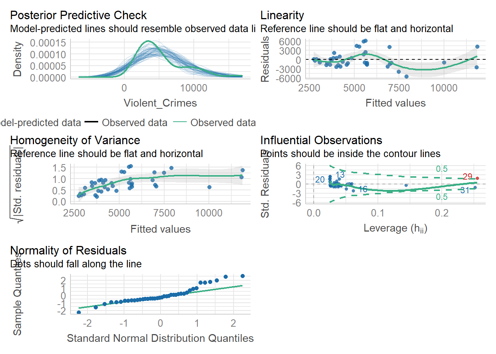

Chapter 6 普通线性模型 - 回归 第一部分
在本次研讨会中，我们将在一般线性模型 (GLM) 的背景下探索简单回归。 您还将有机会构建一些回归模型，在其中根据一个预测变量预测结果变量。 您还将学习如何运行模型诊断，以确保您不会违反回归的任何关键假设。
简单线性回归
在观看了上面的视频之后，我希望你能够通过下面的一个简单线性回归的例子在R中进行实践。记得创建一个新的.Rproj文件来保持事物的有序。
我们需要的R包
首先，我们需要安装所需的软件包。我们将安装tidyverse软件包以及其他几个软件包。软件包Hmisc允许我们使用rcorr()函数来计算Pearson’s r，而performance软件包则允许我们测试我们的模型假设。请记住，如果您之前没有在笔记本电脑上安装这些软件包，您首先需要在控制台中输入install.packages("packagename")才能调用该软件包的library()函数。您可能还需要安装see软件包才能使performance软件包正常工作。如果需要，请在控制台中输入install.packages("see")进行安装。
导入数据
导入名为crime_dataset.csv的数据集 - 这个数据集包含美国城市的人口数据、房价指数数据和犯罪数据。数据包可以点击这里下载
我们可以使用函数head()来显示我们名为“crime”的数据集的前几行。
## # A tibble: 6 × 9
## Year index_nsa `City, State` Population `Violent Crimes` Homicides Rapes
## <dbl> <dbl> <chr> <dbl> <dbl> <dbl> <dbl>
## 1 1975 41.1 Atlanta, GA 490584 8033 185 443
## 2 1975 30.8 Chicago, IL 3150000 37160 818 1657
## 3 1975 36.4 Cleveland, OH 659931 10403 288 491
## 4 1975 20.9 Oakland, CA 337748 5900 111 316
## 5 1975 20.4 Seattle, WA 503500 3971 52 324
## 6 NA NA <NA> NA NA NA NA
## # ℹ 2 more variables: Assaults <dbl>, Robberies <dbl>整理数据
首先让我们进行一些整理。有一列将城市和州的信息合并在一起。让我们使用函数separate()将该信息分离成两个新列，分别称为“City”和“State”。我们还将重命名列，将“index_nsa”列的名称更改为“House_price”，并去掉“Violent Crimes”标题中的空格。
crime_tidied <- crime %>%
separate(col = "City, State", into = c("City", "State")) %>%
rename(House_price = index_nsa) %>%
rename(Violent_Crimes = "Violent Crimes")
head(crime_tidied)## # A tibble: 6 × 10
## Year House_price City State Population Violent_Crimes Homicides Rapes
## <dbl> <dbl> <chr> <chr> <dbl> <dbl> <dbl> <dbl>
## 1 1975 41.1 Atlanta GA 490584 8033 185 443
## 2 1975 30.8 Chicago IL 3150000 37160 818 1657
## 3 1975 36.4 Cleveland OH 659931 10403 288 491
## 4 1975 20.9 Oakland CA 337748 5900 111 316
## 5 1975 20.4 Seattle WA 503500 3971 52 324
## 6 NA NA <NA> <NA> NA NA NA NA
## # ℹ 2 more variables: Assaults <dbl>, Robberies <dbl>绘制数据
我们可能首先认为随着人口规模的增加，犯罪率也会增加。让我们先建立一个散点图。
crime_tidied %>%
ggplot(aes(x = Population, y = Violent_Crimes)) +
geom_point() +
geom_smooth(method = "lm", se = FALSE) +
theme_minimal() +
theme(text = element_text(size = 13)) +
labs(x = "Population",
y = "Violent Crimes")
皮尔逊相关系数(Pearson’s r)
这个图看起来相当有趣。怎么样计算皮尔逊相关系数？
## x y
## x 1.00 0.81
## y 0.81 1.00
##
## n
## x y
## x 1714 1708
## y 1708 1708
##
## P
## x y
## x 0
## y 0看看r值和p值 - r = .81，p < .001。因此，我们的暴力犯罪变量中约64%的变异（ variance）可以通过我们的人口大小变量来解释。很明显，人口规模和暴力犯罪率之间存在正相关关系。从图中可以看出，我们可能会得出结论，这种关系受到一小部分非常大城市犯罪的过度影响（图上方的右上角）。让我们排除人口超过2,000,000的城市。
现在让我们重新绘制图表。由于可能仍然有很多点（因此会出现很多点大致出现在同一位置），我们可以在代码的geom_point()行中将alpha参数设置为<1。该参数对应每个点的透明度。将其更改为其他值以查看发生了什么。
crime_filtered %>%
ggplot(aes(x = Population, y = Violent_Crimes)) +
geom_point(alpha = .25) +
geom_smooth(method = "lm", se = FALSE) +
theme_minimal() +
theme(text = element_text(size = 13)) +
labs(x = "Population",
y = "Violent Crimes")并计算皮尔逊相关系数。
## x y
## x 1.00 0.69
## y 0.69 1.00
##
## n
## x y
## x 1659 1653
## y 1653 1653
##
## P
## x y
## x 0
## y 0仍然存在明显的正相关关系（r = 0.69）。让我们建立一个线性模型。数据集包含大量数据，每个城市每年都会出现多次。对于我们的线性模型，我们的观察结果需要相互独立，所以让我们只关注2015年。这样每个城市只会出现一次。
首先我们应用我们的过滤器。
然后我们构建一个图。我使用geom_text()图层来绘制城市名称，并将check_overlap参数设置为TRUE以确保标签不重叠。
crime_filtered %>%
ggplot(aes(x = Population, y = Violent_Crimes, label = City)) +
geom_point() +
geom_text(nudge_y = 500, check_overlap = TRUE) +
geom_smooth(method = "lm", se = FALSE) +
xlim(0, 1800000) +
theme_minimal() +
theme(text = element_text(size = 13)) +
labs(x = "Population",
y = "Violent Crimes")这显示了一个明显的正线性关系，所以让我们计算一下皮尔逊相关系数。
## x y
## x 1.00 0.65
## y 0.65 1.00
##
## n
## x y
## x 42 40
## y 40 40
##
## P
## x y
## x 0
## y 0建模数据
想象我们是城市规划师，我们想知道暴力犯罪可能随人口规模增加而增加的程度。换句话说，我们想弄清楚暴力犯罪率是如何由人口规模预测出来的。
我们将构建两个线性模型 - 第一个model1 ，我们使用结果变量的平均值作为预测变量，第二个model2 ，我们使用人口规模来预测暴力犯罪结果。
检查我们的假设
让我们使用performance包中的check_model()函数来检查我们模型的假设。

我们的数据集很小，所以我们的一些诊断图看起来不太好。稍后我们会回到有影响力的异常值（第29个案例），但现在让我们使用anova()函数来查看以人口作为预测变量的模型是否比仅使用均值的模型更好。
## Analysis of Variance Table
##
## Model 1: Violent_Crimes ~ 1
## Model 2: Violent_Crimes ~ Population
## Res.Df RSS Df Sum of Sq F Pr(>F)
## 1 39 445568991
## 2 38 257690819 1 187878173 27.705 5.813e-06 ***
## ---
## Signif. codes: 0 '***' 0.001 '**' 0.01 '*' 0.05 '.' 0.1 ' ' 1这是 - 模型不同，你会看到残差平方和（或误差）在第二个模型中较小（该模型以人口为预测变量）。这意味着我们观测数据与回归线模型model2之间的偏差明显小于我们观测数据与平均值作为我们数据模型model1之间的偏差。所以让我们得到model2的参数估计。
解读我们的模型
##
## Call:
## lm(formula = Violent_Crimes ~ Population, data = crime_filtered)
##
## Residuals:
## Min 1Q Median 3Q Max
## -5465.8 -1633.4 -809.1 684.3 6213.8
##
## Coefficients:
## Estimate Std. Error t value Pr(>|t|)
## (Intercept) 9.443e+02 9.216e+02 1.025 0.312
## Population 6.963e-03 1.323e-03 5.264 5.81e-06 ***
## ---
## Signif. codes: 0 '***' 0.001 '**' 0.01 '*' 0.05 '.' 0.1 ' ' 1
##
## Residual standard error: 2604 on 38 degrees of freedom
## (2 observations deleted due to missingness)
## Multiple R-squared: 0.4217, Adjusted R-squared: 0.4064
## F-statistic: 27.71 on 1 and 38 DF, p-value: 5.813e-06截距对应于我们的回归线与y轴相交的地方，人口参数对应于我们线的斜率。我们可以看到，每增加1个人口，暴力犯罪率就会额外增加0.006963。
对于一个人口约一百万的城市，将会有大约7907起暴力犯罪。我们通过将我们的预测值（0.006963）乘以1,000,000，然后加上截距（944.3）来计算得出这个结果。这给我们7907.3起犯罪案件 - 这与我们在上面的回归线上看到的情况相符。我们可能有一些异常值 - 你如何找出这些异常值？尝试排除你发现的任何异常值并重新构建你的模型。